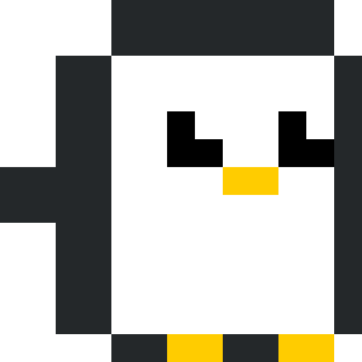

Kwon Nayoung
Just Dive in
낯선 문제 앞에서 먼저 질문합니다.
사용자의 망설임을 관찰하고 흩어진 단서를 경험의 흐름으로 연결합니다.
All projects
View all projects일단 다이브!
작은 신호를 발견하고 함께 나아갈 구조를 만듭니다.
About the name
낯선 문제 앞에서 먼저 질문합니다.
사용자의 망설임을 관찰하고 흩어진 단서를 경험의 흐름으로 연결합니다.
작은 신호를 발견하고 함께 나아갈 구조를 만듭니다.
About the name